Hosting a repository as a website with GitHub Pages
Aims and Objectives
GitHub Pages lets you turn your repository into a website. This is a great way to share your project, resume, portfolio, documentation, or even a blog with the world. When you enable GitHub Pages on a repository, GitHub takes the content that’s on the main branch (or you can specify a different branch) and publishes a website based on its contents. This GitHub Pages skills session will use directed, interactive lessons to provide NOAA Fisheries staff with a foundation in hosting web content through GitHub Pages.
Prerequisites: What do I need before this workshop to follow along on my own?
- This stand-alone skills session is meant for those with a basic understanding of Git and GitHub. Check out our Introduction to Git and GitHub lessons if you are new to Git and GitHub or need a refresher.
- We will also be using a bit of Markdown and discussing README files, so you may want to refresh yourself on Markdown language with our Introduction to Markdown lesson.
GitHub Pages: A primer
Tutorial: Making a basic landing page from a README file with GitHub Pages
For this tutorial, we’re going to be taking a step away from GitHub Skills and creating a basic landing page for a repository using GitHub Pages. Our example is going to be a little boring, but a basic README-based landing page can be formatted to look great! Here’s an example from NMFS Open Science of a formatted README-based landing page:

Step 1: Create a new repository
- On the GitHub home page, click the
+in the upper right corner of, and select New repository.

- Name your repository “github-pages”, and make sure to check the Add a README file box. Make your repository public (you’ll need to do this to enable GitHub Pages), and create your repository.
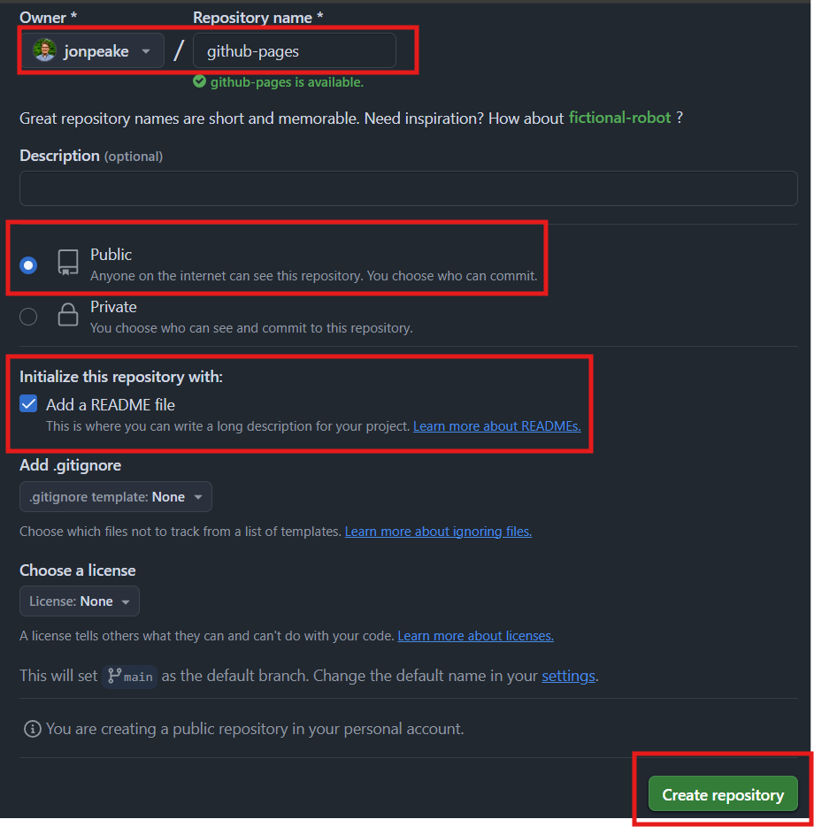
Step 2: Enable GitHub Pages
Navigate to the Settings tab of your new repository.

On the left-hand side, select the Pages section under Code and automation
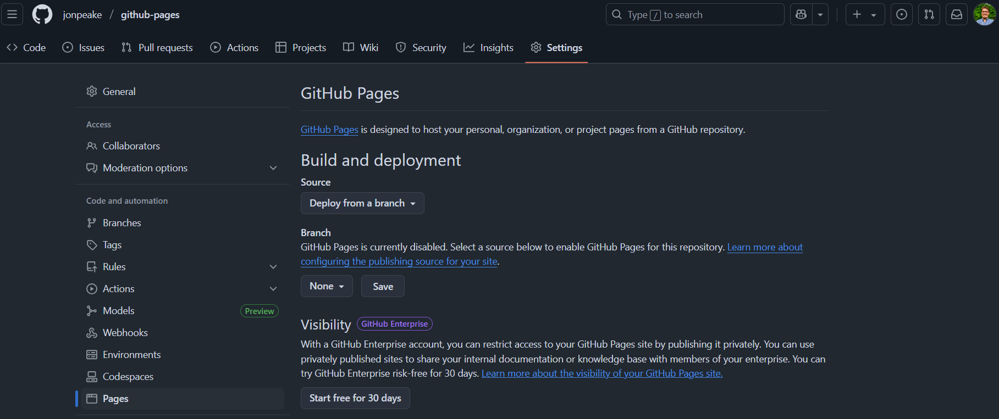Under Source, make sure “Deploy from a branch” is selected (it should be the default). Under Branch, click the drop-down where it says “None” and select “main”.

This will add an additional drop-down to select the directory that GitHub will look for your content. For more complex websites, we can change this to point to a different directory where all of our HTML content will be rendered. For a simple README-based landing page, we can leave this as it’s default
/ (root). This points to the root, or home, directory of your repository where your README file resides.
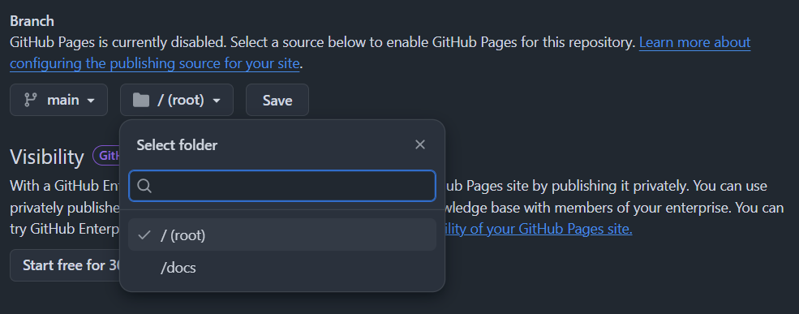Save your changes. At this point, a special GitHub Action will spin up in the background to build your GitHub Pages website.
TipYou can track the progress of your build by navigating to the Actions tab at the top of your repository. Click the “pages build and development” workflow to see what GitHub Actions is doing to build your website.
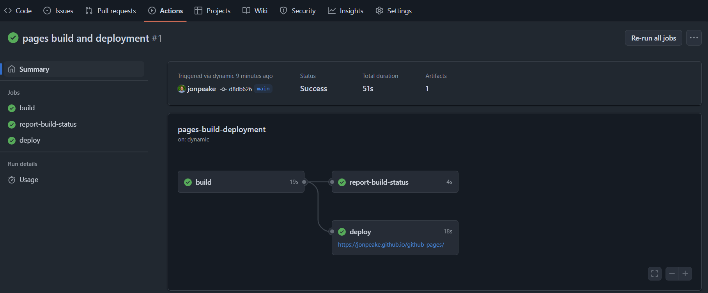Once your website is built, you can view it by clicking the link in the Actions tab, or you should see a banner at the top of your GitHub Pages settings page with the link to your new website. Click the link and check out your new website!


Step 3: Customize our website
Our website as it currently stands is a little dull. Let’s add a theme and some content to make it a little nicer!
- Add a file to your repository in the root (base) directory called
_config.yml.
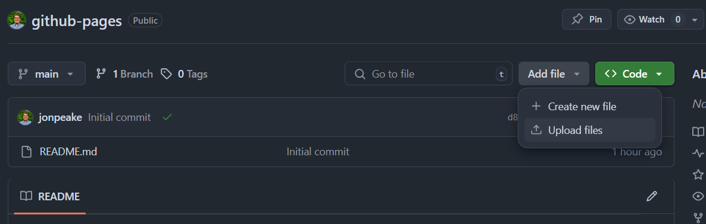
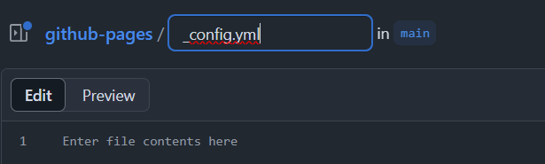 - In the file contents, add the following lines:
title: GitHub Pages Demo Website
theme: jekyll-theme-slate
- Commit your changes, then edit your README.md file (you can click the edit button on the main page)
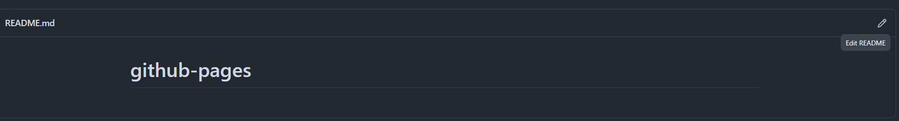 - Change your first-level heading to a suitable front page title, and add some content
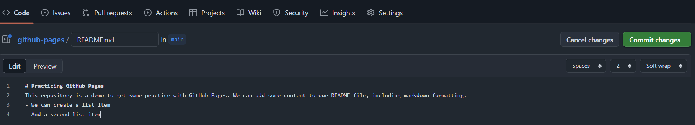 - Commit your changes, wait about 30 seconds, and navigate to your website to see what our changes look like when rendered

Tutorial: GitHub Pages x Quarto templates for NMFS-branded websites
README-based webpages can be useful for one-off landing pages, but in general we’ll want to use something a little more complex to build a webpage. There are many open-source webpage applications to create a website using GitHub Pages. Quarto, which is a Markdown-based publishing software, is a particularly powerful tool for creating a website. However, building a Quarto website from scratch can be tedious.
Thankfully, Quarto and GitHub make it easy to create and share templates for GitHub Pages sites, many of which are plug-and-play; simply add your own content (or replace the current content with your own), and you’re up and running with a clean, themed, feature-rich website! NMFS Open Science provides several templates to create a NOAA Fisheries-themed website. Let’s use one of these to create a more complex website.
Step 1: Copy a Quarto website template to your GitHub
We’re going to use the NOAA-quarto-simple template to create our website. Navigate to the repository on GitHub and click the green Use this template button. Select “Create a new repository”.
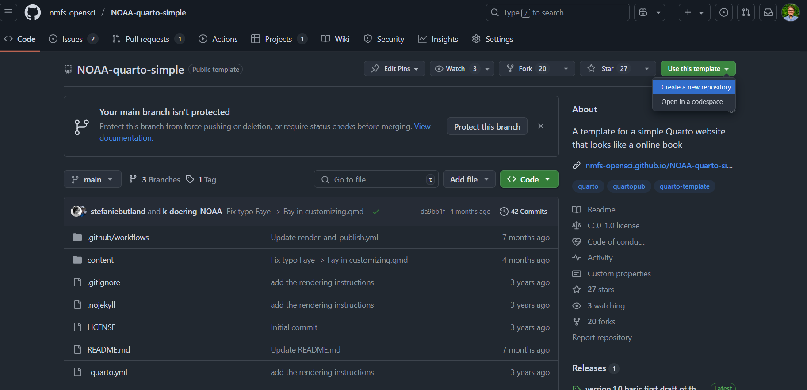
On the Create a new repository page, make sure the check-box next to “Include all branches” is selected (GitHub Pages is set up to deploy from the gh-pages branch, so we need all branches to be copied over to our version of the repository). Give your repository a name (make sure your account is selected as the Owner), and make sure the repository is set to public. Click the green Create repository button to copy the template to your GitHub.

Step 2: Configure GitHub Actions
If you’ll recall from the slides, Quarto files need to be rendered to HTML for GitHub Pages to properly display them as a webpage. The NMFS Open Science Quarto website templates use GitHub Actions, an automation tool provided by GitHub, to automatically render these files to HTML (and push them to the gh-pages branch from where GitHub Pages is set to deploy). We need to make sure that these actions have the proper permissions to write to our repository.
In the Settings tab of your repository, click the dropdown under the Actions section on the left-hand side and select the General category.
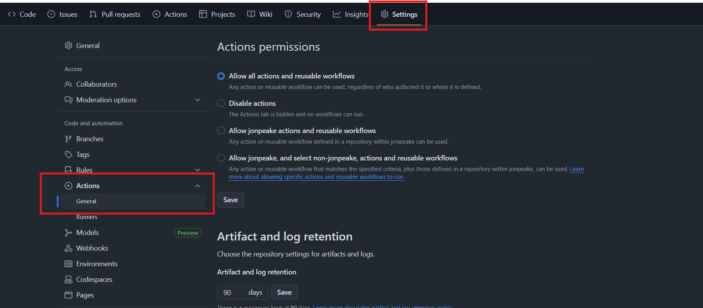
Scroll to the bottom of this section, and under the Workflow permissions heading, select the option for Read and write permissions. Save your changes.
A GitHub Actions workflow began when we initially made our repository. You may receive a notification that the Action failed when it finishes running. That’s okay. As long as we have this Workflow permissions option configured, the GitHub Action workflow should succeed the next time we commit to our repository.

Step 3: Verify that GitHub Pages is building your site
Navigate to the Pages section of the Settings tab on your newly-created repository. Previously, we built our website from the main branch. In this case, we’re building from a separate, dedicated gh-pages branch (still at the root of that branch).

Verify that your site is live by clicking the link in GitHub Pages.
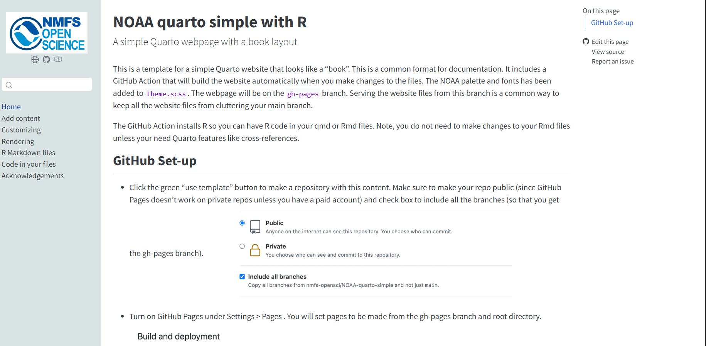
To broadcast that your website is up and running (and provide a more convenient location to access the site URL), we can add a link to the website to our repository home page. On your repository home page, click the gear icon for the About section, click the checkbox next to “Use your GitHub Pages website” under the Website header, and save your changes.
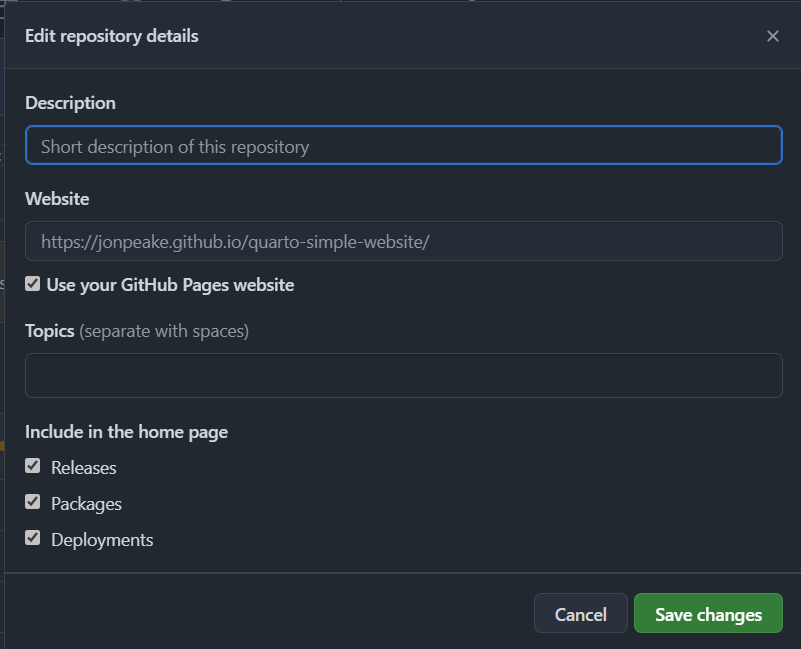
Step 4: Edit your new website
To make changes to your new website, navigate to the Code tab of the repository, and select the content folder of the main branch. Here, you’ll have several markdown files that you can edit to your heart’s content!
If you make changes to the file names, you’ll need to make corresponding changes to the _quarto.yml file. This is more advanced, and a bit outside of the scope of our tutorial, but I encourage you to check out the Websites and books section of the R for Data Science ebook to learn more.